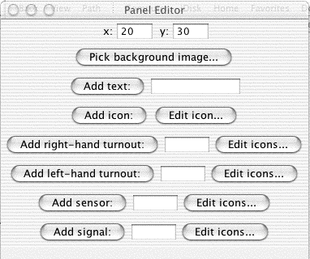

JMRI: PanelPro, an application for making control panels
The JMRI libraries contain the PanelPro application for creating simple control panels. This page describes that application, and how to use it.Contents of a panel


You can make the panel look and operate any way you want.
A panel is one or background pictures, on which are drawn icons to represent turnouts, sensors and signals on the layout. You can build the background from small icons (left above), or provide a detailed drawing that you created in a drawing program (right above).
You can use these tools to configure quite complicated panels for large layouts. The example above is from Nick Kulp's Cornwall Railroad. There's another page that describes this in detail. For another example, see Jerry Britton's page describing how he's controlling his layout. There's also a page describing the panel for Kent Williams's Oregon Washington Navigation & Railway. Robert Bucklew's Quaker Valley Lines is also building a CTC panel using PanelPro.
Also, refer to the signaling page for information on adding logic to operate the signals on your layout under the control of your panel.
Panel operation
Clicking on a turnout symbol flips it from closed to thrown and vice-versa. A turnout also has "unknown" and "inconsistent" states, represented by an icon with a question mark and X respectively. These represent a state where no information has been received, and where the information is internally inconsistent (e.g. both closed and thrown at the same time).This control can be used in various ways. For example, you could have a turnout icon covering a turnout on a schematic diagram. When you click on it, the turnout on the layout would be commanded to change, and the track diagram would show which way a train would be routed. Or you could use icons that show a lever to the right or left, and create a panel that looks like a traditional US&S panel.
"Sensors" can be used to represent occupancy indicators or other inputs. The default icon is a small circle, with color used to represent the state of the sensor. These respond to changes on the layout automatically. Clicking on a sensor causes the sensor to alternate between "active" and "inactive" states. With the default icons, active is a green circle and inactive is an empty circle. These are meant to represent a lit/dark panel indicator. A red circle represents the "unknown" state, used when no information has yet been received from the layout.
Creating a panel
These are made with a "Panel Editor", which allows you to place images to represent turnouts, sensors (on some systems) and trackwork.
You start the editor by selecting "New panel..." from the "Panel" menu
in the PanelPro program. You'll get a blank control panel, plus the
editor window:

From the top, this contains:
- Two text fields specifying where (in pixels) new components will be inserted on the panel. You can generally ignore these, as once the components has been inserted you can drag it around by holding the meta (Apple, command, etc) key down.
- A button to pick a background image. The editor's drawing capability is rudimentary and likely to stay that way for a long time. To create CTC panels, complex track diagrams, etc, its easier to draw them in some other program and insert them as the background image for a JMRI control panel.
- A button to add a text label. Put the desired text in the field and click the button. You can slide the label around after inserting it, but you currently can't edit the text later.
- A button to add an icon as a label. This is a way to add track symbols, etc. To select the
icon, click the "edit icon..." button to pop an
icon editor panel.

The current icon is shown at the top. To change it, use the tree in the bottom of the window to select a new one, then click on the icon at the top of the icon editor panel to load the selected icon. This is a general mechanism: Any icon on an icon editor window can be replaced by selecting the desired new one and clicking on the icon to be replaced. - Two sections for adding left- and right-bound turnouts. These actually work the same way, only with different icons to represent the states of the turnouts. Enter the turnout number (e.g. 23) and click "Add turnout:". If you'd prefer a different graphic for the closed and thrown states, you can change their icons as described above.
- A section for adding a sensor. Type the sensor number (e.g. 74) in the field and click "Add sensor:".
After getting the panel the way you want, you can use the "Store panel..." entry in the "Panels" menu to write it to an XML file.
Available Icons
The JMRI library contains lots of contributed icons for representing CTC panels, LEDs, etc. You can browse through them with the tree in the bottom of the editor frame. Perhaps the best way to see what each looks like is to select it in the tree, then click on the icon next to the "Add icon" button. That will load it.You can also create your own icons and use them by selecting from the "file" section.
For little bits of track, e.g. to connect turnouts, you might want
resources -> icons -> small schematics ->tracksegmentsthen block.gif, etc.
We do need to do a better job of organizing the available icons!
Other types of panels
Because this is icon-based, you can create panels that look any way you want. For example, instead of using track-schematic icons for turnouts, you could use small images of the levels and plates on CTC machine. This would give you "mechanical" levers you can flip back and forth with a click.Making a "real" CTC panel will require better signal logic to handle the code buttons, etc. If you've got opinions on how this should work, please send comments!
Manipulating Icons
To move an icon around on the panel, you "meta-drag" it. On a Mac, that's "hold the cmd key and drag with the cursor"; on windows, it might be the Windows or control key. Or it might be a right-drag. Sorry, I don't have a Windows machine here to figure it out.There's also a pop-up menu (ctrl-click on a Mac) that will provide various ways to manipulate the icon. It will let you rotate the icon so that it points in whatever direction you want. Text labels can have their font, size and color changed. You can also remove icons from the panel with the popup menu.
Communicating with Multiple Systems
PanelPro can communicate with more than one layout control system. For example, the Cornwall Railroad uses C/MRI hardware for sensing the status of blocks and turnouts on the layout, but drives turnout positions through a Digitrax DCC system.
To configure the program to talk to multiple systems, just select them in the
preferences panel:

If you add a turnout, sensor or signal to a panel using just a number, e.g. "23",
it will be assigned to the first system on the preference panel. To
access the 2nd system, you have to use JMRI
system names. For example, if the second attachment is
to a LocoNet system, you'd refer to a LocoNet Turnout as LT13; a LocoNet sensor
as LS21, etc. See the page on
names
for more information.
Thanks and congratulations to all who contributed!
Copyright © 1997 - 2004 JMRI Community.
JMRI, DecoderPro, PanelPro, DispatcherPro and associated logos are our trademarks.
Additional information on copyright, trademarks and licenses is linked here.
Site hosted by: